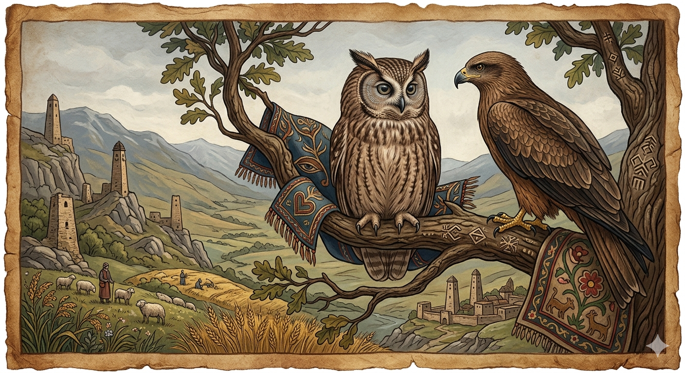

И.А. Дахкильгов. Хьехаме дувцарш - поучительные рассказы-притчи.
И.А. Дахкильгов. Хьехаме дувцарш - поучительные рассказы-притчи. Из ингушского фольклора.

Хьай эшам наха дӀа ма хайта
Гаьн тӀа Ӏохайна ягӀаш бов хиннай. Цунна юххе дена Ӏохайнад кер. Керо аьннад бовнага: - Из бедар ма кӀаьда я хьа, ва бов, - аьнна. - Бедара кӀаьдала-м хӀама даьра дац хьона, са дега кӀаьдал мара, - аьннад бовно керага. - Уж бӀаргаш ма доккхий да хьа, фуд из? - хаьттад юха а. - Доккхий уж хилар пайда бий, бийда уж хилча, - аьннад бовно. - ХӀаьта хьа-м лергаш а ма хиннадий, - цецдаьннад кер. - Да-м дар уж, хӀаьта а къоро я-кха со. Керо уйла яьй: "Дега кӀаьда я, бӀарза я, къора я. Иштта ер йолче-ма сога йита Ӏа!". ТӀакхийттача керо бов йоаттӀаяьй.
РУССКИЙ
Скрывай свои недостатки
На ветке спокойно сидела сова. Подлетел коршун и сел рядом. Разговорились о том, о сем, и коршун поинтересовался: - Сова, что это у тебя перо столь мягкое? - Да это бы еще ничего, вот сердце у меня еще мягче, - ответила сова. - Чего это глаза у тебя столь большие? - поинтересовался коршун. - Что толку в том, если они сырые (подслеповатые), - ответила сова. - У тебя и уши есть? - вновь спросил коршун. - Есть то есть, и все же я почти ничего не слышу, - был ответ. Коршун смекнул: "Сова трусовата, глуховата да к тому же еще и подслеповата. Это легкая добыча". Накинулся коршун и расклевал сову.
ENGLISH
Hide your flaws
An owl was sitting quietly on a branch. A kite flew over and perched beside it. They chatted about this and that, and the kite asked: 'Owl, why is your feather so soft?' 'Well, that's nothing; my heart is even softer,' replied the owl. 'Why are your eyes so big?' asked the kite. 'What's the point if they're dim-sighted?' replied the owl. 'Do you have ears, too?' asked the kite again. 'I do, but I can hardly hear a thing,' came the reply. The kite realised: 'The owl is a bit of a coward, a bit hard of hearing, and on top of that, a bit short-sighted. It's easy prey.' The kite pounced and pecked the owl to pieces.
НОХЧИЙН
ПОГОВОРКИ
Аьлча, дехкеваргвола дош ма ала. - Не молви слово, о котором потом пожалеешь.Берзои вирои доттагӀал леладаьд – берзо вир диад. - Дружили волк и осел – волк осла и съел.Бовна бӀаргаш доккха дале а бийда да. - У совы глаза большие, да сырые (подслеповатые).Дукха тийшачох тӀеххьара а тийшаболх хул. - Слишком доверчивому когда-нибудь подлость сделают.Къайле доттагӀчунга а ма ювца, - цун а хул кхыъ-кхе доттагӀа. - Свою тайну даже другу не открывай – и у него есть свой друг.Къамаьл даьчоа – баркал, йист ца хинначоа – шиъ. - Говорившему – одно спасибо, промолчавшему – два.Наьха дагардар ха веннар нахах ваьннав. - Люди избегают тех, кто стремится узнать из тайны.Ферта кхеллача а гуш хул тӀабаьнна букъ. - Даже буркой не скроешь горб.Хьа мелал дӀахой, наха вуаргва хьо. - Если люди узнают про твои слабости, тебя съедят.Хьазилгий ираз да циск ткъамаш доацаш кхелла. - К счастью птичек, кошка сотворена бескрылой.Хьовла санна мерза ма хила, - тӀа мел кхаьчачо вуаргва хьо; аьрга сом санна къахьа ма хила, - царг мел техачо дӀакхоссаргва хьо. - Не будь сладким, как халва, - иначе все будут есть тебя; не будь горьким, как недозрелый фрукт, - все будут выбрасывать тебя.Шийна къувлар деррига а дӀахайтац. - Не все, что есть за душою, надо рассказывать.Шин сага юкъе йола къайле наха ца ховш юсаргьяц. - Тайна двух будет известна всем.